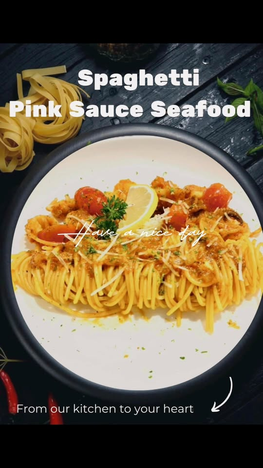
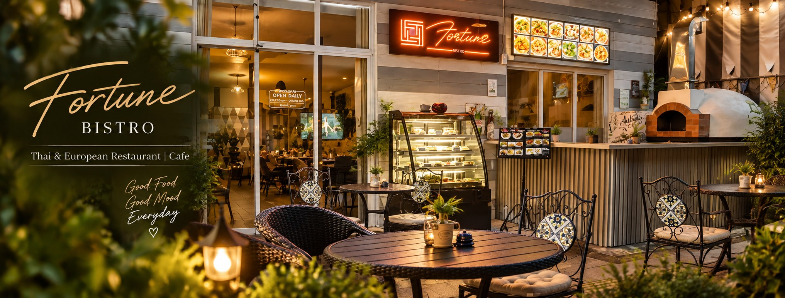
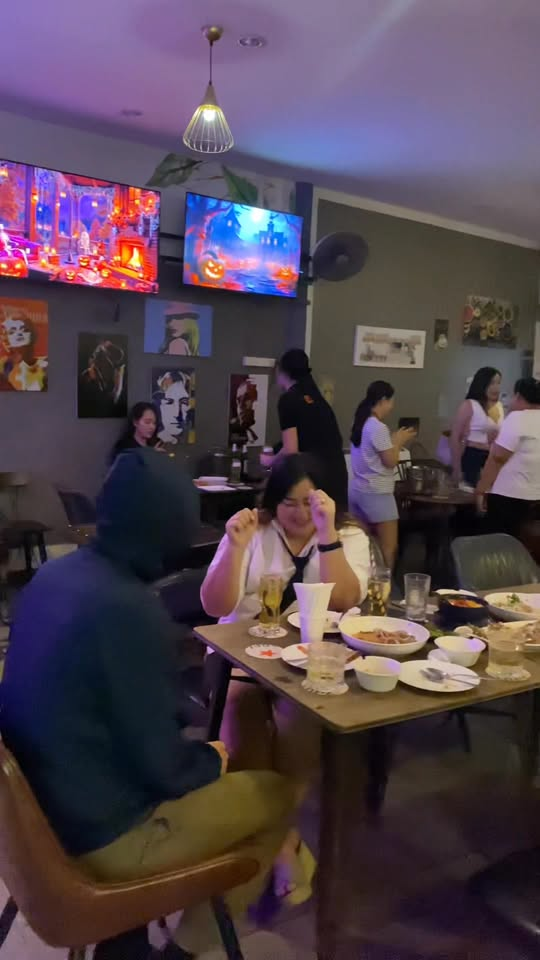
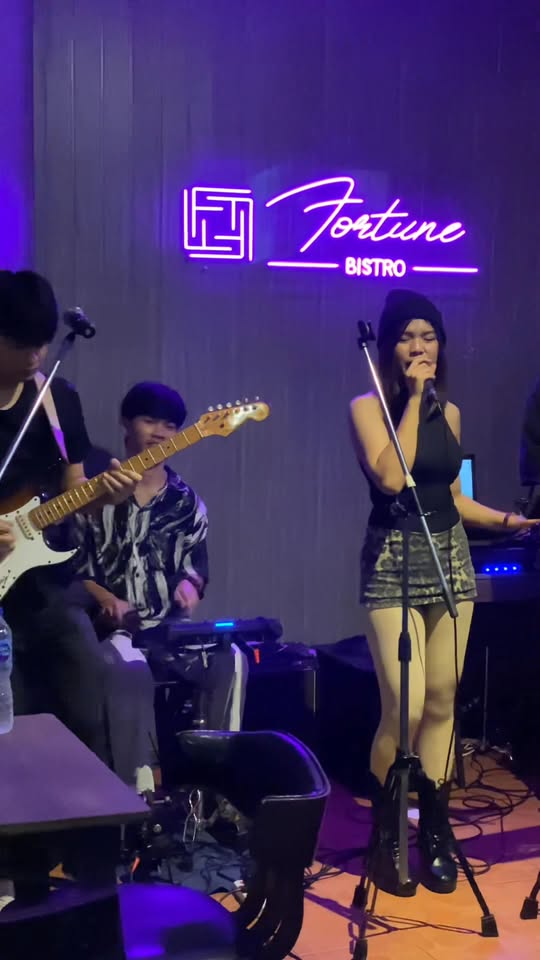
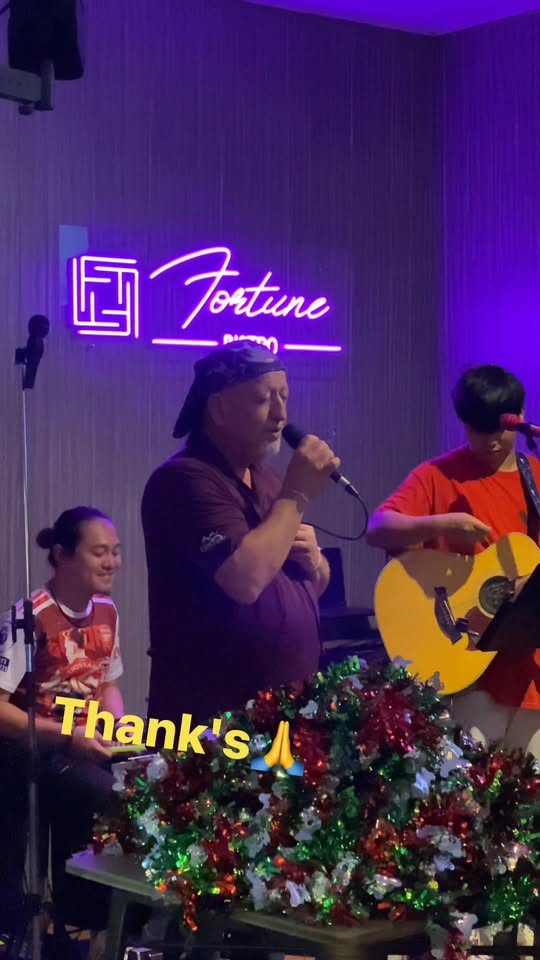

Day
01 · Open early
Breakfast & all-day bistro
Coffee, Thai classics, and European comfort food — pasta, pizza, steaks, burgers — from morning through the afternoon.

ยินดีต้อนรับสู่ Fortune Bistro
Udon Thani · Prajak Silapakom Road
A Thai & European café-bistro first — breakfast through dinner on the patio. Then soccer on the screens. Then live music after dark.
A day at Fortune
One place on ประจักษ์ศิลปาคม that shifts with the clock — café-bistro by day, sports crowd in the evening, live sets after dark.

DayCoffee, Thai classics, and European comfort food — pasta, pizza, steaks, burgers — from morning through the afternoon.

EveningScreens up for the big matches. Cold beers, pizza, and a table with friends while the game plays.

NightNeon on, performers on stage, drinks flowing. Check Facebook for who’s playing tonight.

The kitchen
We’re a real bistro first. Come for breakfast, stay for lunch, come back for dinner. Thai plates sit beside European favourites — pasta, pizza, steaks, burgers, seafood.
Coffee through the daytime. Beers and cocktails when the evening crowd arrives. Outdoor seating when you want air.

Screens & stage
When the afternoon turns, soccer hits the screens and the sports crowd fills the tables. Later, the neon sign glows and live music takes over.
Same kitchen. Same friendly floor team. Three moods in one day — food, football, and a night out.
Atmosphere
Plates from the kitchen, friends at the table, screens for the match, and live sets after dark.


Find us
Right on ถนนประจักษ์ศิลปาคม in Udon Thani — easy for breakfast, a long lunch, match day, or a late drink.
Hours are soft: open daily from morning until late. Confirm on Facebook or by phone if you’re coming for a late set.
Call to book a table or message us on Facebook.